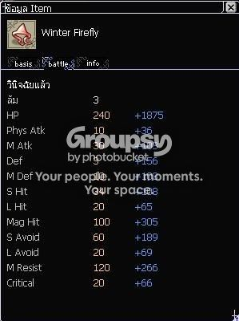

โพสต์แล้ว:
พฤหัสฯ. 11 ก.ย. 2008 3:32 pmโดย ECO
ก็หมาจะไม่ใช้ตัวที่ชื่อ Nimble ลุยเลยน่ะซิ X3
ตัวที่ใช้จะมีแค่ Gunner (ดองส่ง quest) กับ Alchemist (ดองส่ง quest)
ตัวหลักตอนนี้เป็น Sin (Starmancia) จับกัง alchemist (Rene♦Nesa) กับ vates ปั้นใหม่เพราะอยากได้ vates dominion (ดูมันทำดิ = =") (Netune)
พึ่งล้มอันซึรอบที่ 5 ไปหลังจากทนไม่ไหว ตายจนเหลือ 5/30 ล้มมา HP +450 ไม่วายโดน Kodama ต่อยตายเพราะอัดไปจนมันเหลือ 1/10 แต่ไม่ยอมเปลี่ยนเป้า เซ็งหงส์ = ="
โพสต์แล้ว:
พฤหัสฯ. 11 ก.ย. 2008 8:10 pmโดย ECO
ecoconoeco เขียน:↑
ขอดูstat
ปัจจุบันยังไม่ได้ถ่ายเลยครับ เอาไว้สักรอบที่ 25 จะเอาจะถ่ายมาโชว์ตอนนั้นคงไม่ล้มเพิ่มเเล้ว
เเต่ถ้าอดใจรอดูไม่ไหวลองเปิดกลับไปอ่านหน้าเก่าๆก็ได้ครับ ตอนนั้นล้มประมาณ 15 มั้ง เคยมีคนขอดูพลังเวทย์เต้ม เลยเคยลงโพสไป รูปน่าจะยังอยู่

โพสต์แล้ว:
อาทิตย์ 14 ก.ย. 2008 2:32 pmโดย ECO
นั่งดูข้อมูลแมวใหม่อีกสองตัวแล้ว ............ อยากจะเอาอุ้งตีนก่ายหน้าผาก หลอนได้ใจ
นั่งแปล skill กับเพื่อนนานมาก
NEKOMATA.
(Left)??: a little blooper. (Right) Wakana: spoiled child.
Healing skills are used, GURAVITIFORU (effect only six feet), NOKUSHASUBURASUTO, light wind and polkas (DIBAINBARIA the same effect), DIBIRITEITO.
ตีออกมาเป็น
Healing skills
GURAVITIFORU (effect only six feet),
NOKUSHASUBURASUTO,
light wind and polkas (DIBAINBARIA the same effect),
DIBIRITEITO.
Healing
Gravity Fall
???? (confuse หมู่รอบตัว 5*5) มีเจ๊ boss นางไม้ใช้กับ DEM ไหนซักตัวนี่ล่ะ effect เป็นคล้ายๆคลื่นระเบิดรอบตัวแต่สีขาว
Divine Barrier
Weaken (จากการเอาข้อมูลไปเทียบกับวาซาบิ/socerer)
..... แฝดคู่นี้หลอน เบื่อมุก buff ตัวเองแล้วคู่นี้ debuff มอนเฉยเลย
เห็นว่าสามารถเอาแฝดคู่นี้ไปทำชุดได้ด้วย จะได้มาสองตัวเลย (จากที่เพื่อนบอกอ่ะนะ)
ตัวสุดท้ายชินเรียคุ (คล้ายมิโดริแต่หน้าตาดูเอ๋อกว่า)
Healing,
SUTAMINATEIKU,
??????????,
Assault,
sluggish,
critical,
KYUAPOIZUN
ตีมาเป็น
Healing
Stamina Take
Avoid Burst
Assault
Slash หรืออะไรนี่ล่ะ เป็นท่าเดียวในเกมที่ชินเรียคุมี มีผลลด ASP มอนลงชั่วคราว (=A=")
Critical
Cure Poison
หยั่งกะเอา Ai รวมกับอันซึเลยวุ้ย = ="
อันซึพร้อมล้มรอบที่ 6 แต่ยังไม่มีแรงล้ม เหนื่อย oTL~
โพสต์แล้ว:
จันทร์ 15 ก.ย. 2008 12:20 pmโดย ECO
Shiika เขียน:ขอ note ไว้หน่อย แมวตัวเอง
แมวล้ม 2 matk 30+98 (max +98 ) rcv 206% แมวฮีลตัวเองได้ 630
จับไปล้มรอบที่ 3 ละ อีกสักเดือนคงได้เทส matk
มาแจ้งข่าว
ตอนนี้แมวล้ม 3 matk 30+98 (max +103) rcv 209% แต่แมวฮีลตัวเองได้แค่ 618 :?
อะไรของมันฟะ ฝึกก็ยาก ดันล้มแล้วฮีลเบาลงอีก
โพสต์แล้ว:
จันทร์ 15 ก.ย. 2008 12:46 pmโดย ECO
Shiika เขียน:Shiika เขียน:ขอ note ไว้หน่อย แมวตัวเอง
แมวล้ม 2 matk 30+98 (max +98 ) rcv 206% แมวฮีลตัวเองได้ 630
จับไปล้มรอบที่ 3 ละ อีกสักเดือนคงได้เทส matk
มาแจ้งข่าว
ตอนนี้แมวล้ม 3 matk 30+98 (max +103) rcv 209% แต่แมวฮีลตัวเองได้แค่ 618 :?
อะไรของมันฟะ ฝึกก็ยาก ดันล้มแล้วฮีลเบาลงอีก
เห็นแบบนี้ละท้อแฮะ มัีนขึ้นยากจริงๆ แบบนี้ถ้าฮิลเบาลง เราจะฝึก m.atk ไปทำไมนี่??
อยากเลี้ยงแมวคู่แฝดนั่นเหมือนกัน รออยู่ แต่คงอีกนานกว่าจะมา
โพสต์แล้ว:
จันทร์ 15 ก.ย. 2008 2:08 pmโดย ECO
อย่าบอกนะว่าที่แครอทเป็นแมวก็เป็นน่ะ = ="
โพสต์แล้ว:
อังคาร 16 ก.ย. 2008 7:30 pmโดย ECO
น่ามีการแข่งขันเอาแมวมาสู้กันนะคะที่ทาโกะอ่าเห็นมีคนฝึกกันเยอะ มิมิ
โพสต์แล้ว:
อังคาร 16 ก.ย. 2008 9:47 pmโดย ECO
^
^
คนในลานมันชอบเกรียนมาตีตายค่ะ ตั้งป้ายมันก็ไม่สนใจ-*-
ถ้ามีลานสำหรับเพ็ทเลยก็ดีสิ เดี๋ยวจะเอาซึซึจังไปเล่นด้วย หุหุ
โพสต์แล้ว:
พุธ 17 ก.ย. 2008 1:05 amโดย ECO
SnOt เขียน:Shiika เขียน:Shiika เขียน:ขอ note ไว้หน่อย แมวตัวเอง
แมวล้ม 2 matk 30+98 (max +98 ) rcv 206% แมวฮีลตัวเองได้ 630
จับไปล้มรอบที่ 3 ละ อีกสักเดือนคงได้เทส matk
มาแจ้งข่าว
ตอนนี้แมวล้ม 3 matk 30+98 (max +103) rcv 209% แต่แมวฮีลตัวเองได้แค่ 618 :?
อะไรของมันฟะ ฝึกก็ยาก ดันล้มแล้วฮีลเบาลงอีก
เห็นแบบนี้ละท้อแฮะ มัีนขึ้นยากจริงๆ แบบนี้ถ้าฮิลเบาลง เราจะฝึก m.atk ไปทำไมนี่??
อยากเลี้ยงแมวคู่แฝดนั่นเหมือนกัน รออยู่ แต่คงอีกนานกว่าจะมา
ความแรงในการฮีลของเเมว ไม่ได้อยู่ที่ Matk อย่างเดียวนะครับ เหอๆๆๆ
ปัจจัยทั้งหมดอยู่ที่
1. Matk ของเเมวเป็นหลัก
2. ค่า vit เเละ HP Max ของเป้าหมายที่ได้รับฮีล
3. ถ้าเเมวฮีลตัวเอง จะเพิ่มคำนวนค่าอัตราการฟื้นฟู HP ของเเมวเข้าไปด้วยนะครับ
ป.ล. หวังว่าสาวกเเมวทั้งหลายคงจะกระจ่างกันเเล้วนะครับ
โพสต์แล้ว:
พุธ 17 ก.ย. 2008 1:58 amโดย ECO
Ludiss เขียน:SnOt เขียน:Shiika เขียน:Shiika เขียน:ขอ note ไว้หน่อย แมวตัวเอง
แมวล้ม 2 matk 30+98 (max +98 ) rcv 206% แมวฮีลตัวเองได้ 630
จับไปล้มรอบที่ 3 ละ อีกสักเดือนคงได้เทส matk
มาแจ้งข่าว
ตอนนี้แมวล้ม 3 matk 30+98 (max +103) rcv 209% แต่แมวฮีลตัวเองได้แค่ 618 :?
อะไรของมันฟะ ฝึกก็ยาก ดันล้มแล้วฮีลเบาลงอีก
เห็นแบบนี้ละท้อแฮะ มัีนขึ้นยากจริงๆ แบบนี้ถ้าฮิลเบาลง เราจะฝึก m.atk ไปทำไมนี่??
อยากเลี้ยงแมวคู่แฝดนั่นเหมือนกัน รออยู่ แต่คงอีกนานกว่าจะมา
ความแรงในการฮีลของเเมว ไม่ได้อยู่ที่ Matk อย่างเดียวนะครับ เหอๆๆๆ
ปัจจัยทั้งหมดอยู่ที่
1. Matk ของเเมวเป็นหลัก
ก็เขียนบอกแล้วไง matk ของแมว2. ค่า vit เเละ HP Max ของเป้าหมายที่ได้รับฮีล
ทั้ง 2 รอบ เทสที่การฮีลตัวแมวเอง ไม่ได้เกี่ยวของกับ vit ของคนเลี้ยงเลย(เนโกะฮีลใส่เนโกะเอง)3. ถ้าเเมวฮีลตัวเอง จะเพิ่มคำนวนค่าอัตราการฟื้นฟู HP ของเเมวเข้าไปด้วยนะครับ
ก็เขียนเข้าไปแล้วไง ค่าอัตราการพื้นฟูของแมวป.ล. หวังว่าสาวกเเมวทั้งหลายคงจะกระจ่างกันเเล้วนะครับ
กระจ่างยัง?
rcv = ค่าอัตราการฟื้นฟู = recovery
โพสต์แล้ว:
พฤหัสฯ. 18 ก.ย. 2008 1:05 pmโดย ECO
Aomyim เขียน:น่ามีการแข่งขันเอาแมวมาสู้กันนะคะที่ทาโกะอ่าเห็นมีคนฝึกกันเยอะ มิมิ
สู้กันเองลำบากอะ เพราะตีกันไม่ค่อยโดน แมวหลบเยอะ แต่ตีไม่ค่อยแม่น
+เกรียนเยอะจริงๆน่ะแหละ
โพสต์แล้ว:
อาทิตย์ 28 ก.ย. 2008 9:32 amโดย ECO
Shiika เขียน:Shiika เขียน:ขอ note ไว้หน่อย แมวตัวเอง
แมวล้ม 2 matk 30+98 (max +98 ) rcv 206% แมวฮีลตัวเองได้ 630
จับไปล้มรอบที่ 3 ละ อีกสักเดือนคงได้เทส matk
มาแจ้งข่าว
ตอนนี้แมวล้ม 3 matk 30+98 (max +103) rcv 209% แต่แมวฮีลตัวเองได้แค่ 618 :?
อะไรของมันฟะ ฝึกก็ยาก ดันล้มแล้วฮีลเบาลงอีก

อะ อันนี้เต็มละ matk 30+103 rcv 209% แมวฮีลตัวเองได้ 639
ึคาดว่าฮีลไม่แรงขึ้นจากตอนล้ม 2 เลย ที่เหนว่าแรงขึ้น น่าจะเป็นเพราะค่า rcv ที่เพิ่มขึ้น 3%
โพสต์แล้ว:
อาทิตย์ 28 ก.ย. 2008 2:34 pmโดย ECO
มันบัคหรือเปล่านี่ หรือว่าตั้งใจให้เป็น คือแมวของผมกะเต็มละ แต่เห็นข้อมูลจากคุณ Shiika
เลยไม่กล้าล้มเลย เอามันไปเล่นอย่างนั้นล่ะ + +